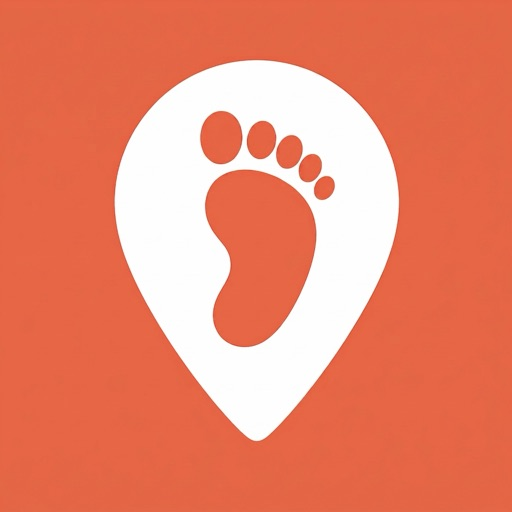
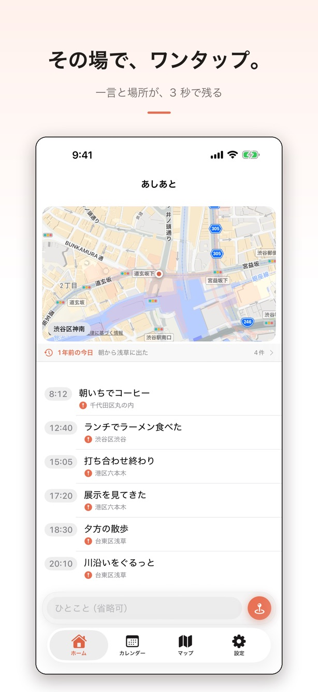
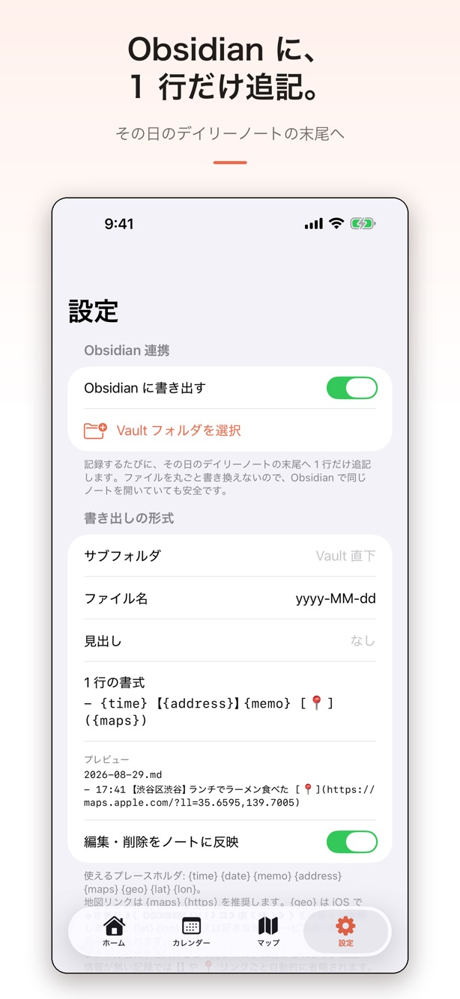
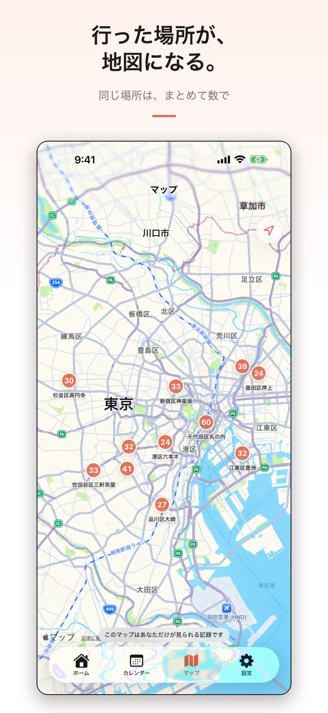
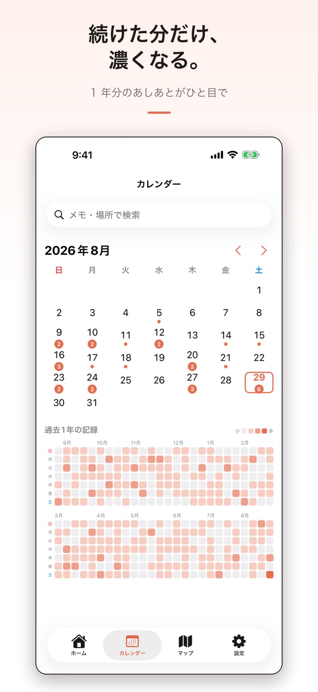
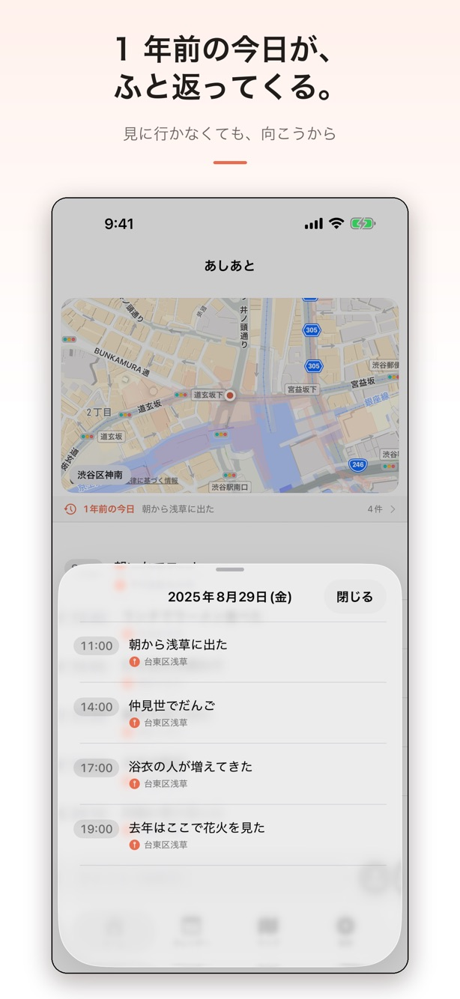

こんな経験はありませんか
画面





主な機能
その場で、ワンタップ
一言を書いて送るだけ。現在地は自動で添えられます。記録は下から順に積み上がり、今日のあしあとがそのまま並びます。
Obsidian に1行だけ追記
その日のデイリーノートの末尾に、記録を1行だけ書き足します。ファイルを丸ごと書き換えないので、Obsidian で同じノートを開いていても壊れません。書式は時刻・メモ・住所・地図リンク・緯度経度を好きな並びで指定できます。
カレンダーに印がつく
記録した日にマークが付きます。続いている感じが目に見えます。
1年前の今日
過去の同じ日の記録が、ホームの上に自動で出てきます。Pro
マップ
行った場所がピンで並びます。同じ場所はまとめて件数で表示されます。Pro
Webhook 連携
記録するたびに、メモ・日時・住所・緯度経度を指定した URL へ送ります。Zapier や Make 経由で Notion やスプレッドシートへ流せます。Pro
料金
Pro は買い切りです。月額料金や追加課金はありません。
無料
¥0
- 記録（件数の制限なし）
- ホーム・カレンダー
- 検索・編集・削除
- Obsidian への書き出し
Pro（買い切り）
アプリ内で確認一度の購入でずっと
- マップ
- 「1年前の今日」
- 1年分の記録
- Webhook 連携
記録することに制限はありません。無料のままでもアプリとして完結します。
データの扱い
記録はお使いの端末の中と、あなたが選んだ Obsidian の Vault にだけ保存されます。開発者のサーバーには何も送られません。
広告も解析も入っていません。位置情報はアプリの使用中のみ、記録を作る操作をしたときだけ取得します。常時測位は行いません。
Webhook を有効にしたときだけ、あなたが指定した送信先に記録が送られます。送信先での扱いはその提供者の管理下にあるため、設定前にご確認ください。
詳細はプライバシーポリシーをご覧ください。
よくある質問
Obsidian を使っていなくても大丈夫ですか
大丈夫です。Obsidian 連携は使いたい人だけの機能で、アプリ単体で完結します。
位置情報を許可しないと使えませんか
使えます。位置を伴わない記録も作成できます。
記録の件数に制限はありますか
ありません。無料のままいくつでも記録できます。Pro で増えるのは、貯まった記録を見返すための機能です。
機種変更したらデータは引き継げますか
記録は端末内に保存されるため、そのままでは引き継げません。Obsidian への書き出しを使っていれば、そちらに記録が残ります。
Webhook は何に使えますか
Zapier や Make に送れば、その先で Notion やスプレッドシートへ流せます。自分でサーバーを用意して受け取ることもできます。
サポート
不具合の報告、ご要望、使い方のご質問は、フォームまたはメールでお寄せください。個人で開発・運営しているため、すべてに返信できるとは限りませんが、いただいた内容はすべて目を通しています。
メールの場合は support@gekisoba.com 宛にお送りください。